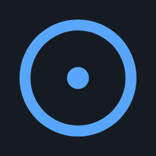
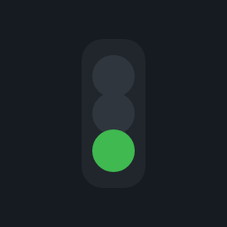
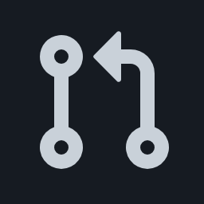
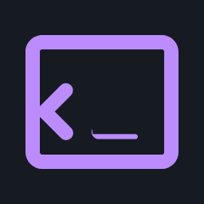
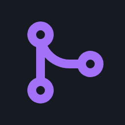
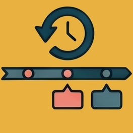
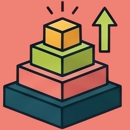

PLAYGROUND Join the Playground INTERACTIVE
Click the link below, submit the issue, then accept your invite. Once you're a member, try /fs-triage or /fs-code on any open issue.
Repos: go-hello · python-app · node-api
CASE 1 Create New Bug - Zero-Touch Bug Fix AUTONOMOUS WITH GUARDRAILS

Issue Created → Triage (auto)
→
Triage (auto)
→

ready-to-code → Code Agent (auto)
→
Code Agent (auto)
→

PR Opened → Review (auto)Cursor Prompt — paste this to create the issue
Create an issue in this repo to document the bug of the main page saying "fullsand" rather than "fullsend"
CASE 2 Create New Feature - Smart Triage Routing NOT EVERYTHING GETS AUTO-CODED
Issue Created
→
Triage (auto)
→
type/feature + triaged
→
⛔ Code Agent NOT triggered
Triage (auto)
→
type/feature + triaged
→
⛔ Code Agent NOT triggered
Cursor Prompt — paste this to create the issue
File a GitHub issue on fullsend-playground/hello-pages titled "Add site footer with repo, live site, and license links" asking for a minimal footer on the landing page (index.html) with links to the GitHub repo (https://github.com/fullsend-playground/hello-pages), the live site (https://fullsend-playground.github.io/hello-pages/), and the Apache 2.0 license, styled in assets/css/site.css to match the existing dark gradient theme using current CSS variables, with no new dependencies.
CASE 3 Provide More Info To Triage - Codebase-Aware Triage AGENTS READ YOUR REPO
Comment answers needs-info
→
Agent checks repo
→
needs-info: "ADR doesn't exist"

/fs-triage →Agent checks repo
→
needs-info: "ADR doesn't exist"
Cursor Prompt — paste this to create the issue
File a GitHub issue on fullsend-playground/hello-pages. Title: Improve the homepage Body (keep it short and vague — do not add scope, mockups, acceptance criteria, or design details): The landing page feels too bare. Can we make it better? Do not label it, assign it, or expand the description. Open the issue only; no PR or code changes.
Step 1 — Post this comment to provide the requested info
mostly thinking visual — some globe graphics in the background behind the hero. subtle wireframe globes or a soft earth-ish shape, nothing loud. doesn't need to be interactive, just something behind the "hello world" text so it's not totally flat. slow spin or drift is fine if it's easy but keep it low-key.
Step 2 — Then trigger triage to re-evaluate
/fs-triage
CASE 4 Fix Agent - Address Review Findings REVIEW → FIX → RE-REVIEW
Code Agent
→
PR Opened
→
Review (auto)
→
/fs-fix
→
Fix Agent
→
Review (auto)
→

MergedPR #2038 was opened by the code agent, reviewed with findings, fixed by the fix agent (posting as the code agent), re-reviewed, and merged — the full cycle in about 1.5 hours.
CASE 5 Retro Agent - Post-Merge Quality Audit SELF-HEALING PIPELINE

Retro: found gap → Auto-filed issue → /fs-code →Code Agent
→
PR → Review
PR #1083 was merged. The retro agent audited it post-merge and discovered a force-push left the PR with zero agent review. It filed this issue automatically. Now we trigger the code agent to fix the gap it found.
CASE 6 Human PR - Agents Review Human Code Too YOU STAY IN CONTROL
CASE 7 Adding custom agents
Issue Created
→

Prioritize AgentThe prioritize agent is used to assign RICE scores to issues in the Fullsend repo